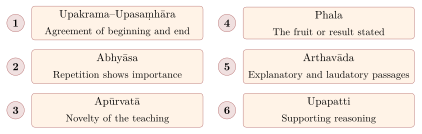

Chapter 6: Pūrva Mīmāṃsā and the Grammarians — Vedic Hermeneutics and the Philosophy of Language¶
Opening Sūtra
athāto dharma-jijñāsā
Now, therefore, the inquiry into dharma (duty/righteousness).
— Mīmāṃsā Sūtra 1.1.1 (Jaimini)
6.1 Historical Background and Significance¶
The word mīmāṃsā means “deep reflection” or “critical investigation.” Pūrva Mīmāṃsā (Prior Investigation) is also known simply as Mīmāṃsā or Dharma-Mīmāṃsā (Investigation into Dharma). It is called “prior” (pūrva) because it investigates the earlier portions of the Vedas — the Saṃhitās and Brāhmaṇas — which deal with ritual action (karma-kāṇḍa), as distinct from Uttara Mīmāṃsā (Vedānta), which investigates the later portions (Upaniṣads) dealing with knowledge (jñāna-kāṇḍa).
Historical Note: Maharshi Jaimini
The Mīmāṃsā Sūtra is ascribed to Jaimini. It is the longest of the darśana sūtras, comprising about 2,700 aphorisms (counts vary) arranged in twelve chapters (adhyāyas). Tradition makes Jaimini a disciple of Vyāsa. The text is usually dated to c. 2nd century BCE (estimates range from the 3rd to the 1st century BCE); it grew out of the ritual exegesis of the Śrautasūtras and itself cites earlier teachers such as Bādari and Bādarāyaṇa.
6.1.1 Major Texts and Commentators¶
Table 6.1 lists the major texts and commentators.
| Text | Author | Date | Significance |
|---|---|---|---|
| Mīmāṃsā Sūtra | Jaimini | c. 2nd c. BCE | c. 2,700 foundational aphorisms |
| Śābarabhāṣya | Śabara | c. 200–400 CE (estimates vary) | Oldest surviving commentary; earlier ones (Upavarṣa, Bhavadāsa) are lost |
| Ślokavārttika, Tantravārttika, Ṭupṭīkā | Kumārila Bhaṭṭa | c. 600–650 CE | Sub-commentaries on Śabara; founding works of the Bhāṭṭa school |
| Bṛhatī and Laghvī | Prabhākara | 7th c. CE | Sub-commentaries on Śabara; founding works of the Prābhākara school |
| Vidhiviveka, Mīmāṃsānukramaṇī | Maṇḍana Miśra | late 7th – 8th c. CE | Bhāṭṭa; theory of injunction |
| Ṛjuvimalā, Prakaraṇapañcikā | Śālikanātha | c. 8th–9th c. CE | Prābhākara commentator and systematiser |
| Śāstradīpikā | Pārthasārathi Miśra | c. 11th c. CE | Influential Bhāṭṭa exposition |
| Mīmāṃsānyāyaprakāśa; Arthasaṃgraha | Āpadeva; Laugākṣi Bhāskara | 17th c. CE | Introductory manuals |
This chapter treats Mīmāṃsā together with the philosophy of the Grammarians (Section 6.18), its chief rival on the nature of words and sentences.
6.2 Two Sub-Schools: Bhāṭṭa and Prābhākara¶
The Mīmāṃsā tradition divides into two major sub-schools named after their foundational teachers, Kumārila Bhaṭṭa (the Bhāṭṭa school) and Prabhākara (the Prābhākara school). They differ on the number of pramāṇas, the theory of error, the way cognition is known, and the analysis of sentence meaning; their differences are set out in Table 6.6 below.
6.3 The Concept of Dharma¶
For Mīmāṃsā, dharma is the central concept, and the second sūtra defines it:
Definition of Dharma
codanā-lakṣaṇo ’rtho dharmaḥ
Dharma is a beneficial thing (artha) that is known through Vedic injunction (codanā).
— Mīmāṃsā Sūtra 1.1.2
The definition has two parts, and both matter. Dharma is a good (artha), something that leads to a desirable result; and it is known through injunction (codanā) and through nothing else. It is suprasensible (atīndriya): no perception shows that a sacrifice leads to heaven, and no inference from perception could establish it. The Veda is therefore the only authority on dharma, and the Veda’s injunctions (vidhi), above all those prescribing ritual (yajña), are the primary means of knowing and fulfilling it. Everything else in the system — the theory of the Veda’s authorlessness, the doctrine that knowledge is intrinsically valid, the hermeneutic rules — serves to make this claim defensible.
6.4 Vedic Sentences and Injunctions¶
Mīmāṃsā classifies the sentences of the Veda by their function (Table 6.2).
| Type | Sanskrit | Description and Example |
|---|---|---|
| Injunction | Vidhi | Commands to perform an action: “One who desires heaven should perform the Agnihotra” |
| Prohibition | Niṣedha | Commands to refrain: “One should not harm any living being” |
| Explanatory | Arthāvāda | Passages that praise or condemn, motivating the performance of rituals |
| Mantra | Mantra | Sacred formulae recited during rituals |
| Name | Nāmadheya | Names of rituals and their components |
Among these, vidhi (injunction) is the most important, as it alone communicates dharma. The other types of sentences serve a subordinate function in relation to the injunctions.
Injunctions are themselves of four kinds: the originative injunction (utpatti-vidhi), which establishes a rite; the injunction of application (viniyoga-vidhi), which assigns a detail to a rite; the injunction of eligibility (adhikāra-vidhi), which states who is qualified to perform it; and the injunction of performance (prayoga-vidhi), which fixes the order of its acts.
The question of eligibility (adhikāra) is discussed at length in the sixth book of the Mīmāṃsā Sūtra. There Jaimini rejects the view, ascribed to Bādari, that all four varṇas are eligible for Vedic rites, and excludes śūdras; a wife is eligible only jointly with her husband. These rulings, elaborated by Śabara, shaped the Brahmanical restriction of Vedic ritual and learning by caste and gender.
6.5 Principles of Interpretation¶
Mīmāṃsā developed an extensive set of interpretive rules (nyāyas) for resolving conflicts and ambiguities in the Veda. Its own best-known ranking of evidence (Mīmāṃsā Sūtra 3.3.14; 3.3.13 in some editions) concerns how a subsidiary element is assigned to its principal. It lists six means — direct statement (śruti), the indicatory power of a word (liṅga), syntactic connection (vākya), context (prakaraṇa), position (sthāna) and name (samākhyā) — and rules that in case of conflict each is stronger than those after it. Other general rules are listed in Table 6.3.
| Principle | Sanskrit Name | Application |
|---|---|---|
| Primary vs. secondary meaning | Mukhya-artha / Gauṇa-artha | Words should be interpreted in their primary (literal) sense unless this leads to absurdity |
| Context determines meaning | Prakaraṇa | The meaning of a sentence is determined by its textual context |
| Avoiding contradiction | Virodha-parihāra | Vedic texts should be interpreted so as to remove apparent contradictions between them |
| Specific overrides general | Sāmānya-viśeṣa | A specific rule takes precedence over a general rule in case of conflict |
| Exclusive specification | Parisaṅkhyā | A statement that excludes unmentioned alternatives (“five five-nailed animals may be eaten” excludes other five-nailed animals) |
| Presumptive reasoning | Arthāpatti | When a Vedic statement appears contradictory, one may postulate an unstated fact |
Vedāntins later adapted the method to the Upaniṣads, asking not how a ritual detail fits its rite but what the purport of a whole passage is. They used six indicators (liṅgas) of purport, shown in Figure 6.1; the same concern with method divided the Vedānta schools themselves (Section 8.7).

6.6 Epistemology: The Six Pramāṇas¶
The Bhāṭṭa school accepts six means of knowledge, a list later adopted by Advaita Vedānta: perception, inference, testimony — of which the Veda is the supreme case — comparison, postulation (arthāpatti) and non-apprehension (anupalabdhi); the Prābhākara school accepts the first five. Postulation is the assumption of an unperceived fact needed to reconcile two known facts that would otherwise conflict. Two classic examples are used: Devadatta is known to be alive but is not at home, so one postulates that he is somewhere else; and Devadatta is fat but does not eat by day, so one postulates that he eats at night. The Naiyāyikas argued that postulation is only a kind of inference; the Mīmāṃsakas replied that it proceeds from a conflict, not from a mark, and that its conclusion is reached by the need to explain, not by a pervasion. Non-apprehension, defended by Kumārila as an independent means for knowing absence, is discussed below.
6.6.1 Svataḥ-Prāmāṇya — The Self-Validity of Knowledge¶
One of Mīmāṃsā’s most important epistemological contributions is the doctrine of svataḥ-prāmāṇya, the intrinsic validity of knowledge. Every cognition is to be presumed valid unless shown otherwise. Its validity arises from the same conditions that produce the cognition itself, while its invalidity is due to extraneous factors — a defect in the sense organ, or a later cognition that sublates it. Applied to the Veda, the principle has a striking result: since the Veda has no author, there is no author whose ignorance or deceit could introduce a defect, and so nothing could ever overturn its injunctions.
This doctrine stands in contrast to the Nyāya position of parataḥ-prāmāṇya (extrinsic validity), which holds that the validity of a cognition is established by something outside it, such as successful action. The debate over validity (prāmāṇyavāda) became one of the central controversies of Indian epistemology (Taber 2005; Mohanty 2000).
6.7 The Doctrine of Apauruṣeyatva — The Authorless Vedas¶
The most characteristic Mīmāṃsā doctrine is that the Veda is apauruṣeya, not composed by any person, human or divine. It is eternal, transmitted from teacher to pupil without a beginning; its seers (ṛṣis) saw its mantras but did not make them; and because it has no author it cannot contain the errors, biases or deceptions that any author, even a divine one, might introduce. The argument is largely negative. No author of the Veda is remembered, though the authors of other texts are; the tradition of its recitation has no known beginning; and the claim that God composed it cannot be established, since there is no evidence for a creator (see below).
Buddhist and Jain critics replied that an unbroken tradition of transmission proves nothing about authorlessness, and that a text whose meaning depends on human interpreters inherits their fallibility; Nyāya held instead that the Veda is reliable because God is its author. This is a doctrine of faith in the sense that it is not a historical claim: modern scholarship treats the Vedic texts as compositions of many poets over many centuries.
6.8 Language: Words, Meanings and Sentences¶
The authorless Veda requires a theory of language to match. For Mīmāṃsā the relation between a word and its meaning is innate (autpattika, Mīmāṃsā Sūtra 1.1.5), not established by any person; words are eternal, and what is produced and perishes is only the audible sound that manifests them; the primary meaning of a word is a universal (ākṛti, jāti), not a particular; and a word is nothing but its phonemes in a fixed order, so that the Grammarians’ sphoṭa is unnecessary (Section 6.18). Mīmāṃsā thus disagrees with the Nyāya view that the word–meaning relation is a convention (saṅketa) established by God; it needs no God to establish language, which fits its general theology.
How do words combine into the meaning of a sentence? The two sub-schools gave rival answers. For Kumārila’s school (abhihitānvaya-vāda) the words first express their own meanings, which are then related to one another to give the meaning of the sentence; the conditions of that relating are expectancy, semantic fitness and contiguity, the same conditions Nyāya used (Section 2.7). For Prabhākara’s school (anvitābhidhāna-vāda) words never convey isolated meanings; each expresses its meaning already as connected with the meanings of the others, so that the sentence-meaning is not a later synthesis but the primary unit of communication. Prabhākara’s argument is from learning: a child learns words by watching elders respond to whole commands — “bring the cow”, “take away the horse” — and so learns each word only as a part of a connected meaning. Modern scholars have compared the dispute with the question whether sentence meaning is built compositionally from word meanings or whether the sentence is primary; Kumārila’s view is broadly compositional, Prabhākara’s more contextual (Matilal 1990). The Grammarian Bhartṛhari took the more radical view that the sentence is an indivisible unit.
6.9 Mīmāṃsā’s Theory of the Self (Ātman)¶
Both Mīmāṃsā sub-schools affirm the existence of a permanent, eternal self (ātman), but they differ significantly in their understanding of its nature and how it is known.
6.9.1 Kumārila’s View¶
For Kumārila, the self is an eternal, all-pervading knowing subject (jñātṛ) that is both the agent of action and the experiencer of its fruits. Cognition is an activity or modification of the self that arises when it is joined with the mind (manas) and the senses, not a fixed, ever-present essence; later Bhāṭṭas describe the self as partly insentient and partly conscious (jaḍa-bodhātmaka), and in dreamless sleep it persists without cognitions. The self is the object of the “I”-notion (ahaṃ-pratyaya); cognitions themselves are not self-revealing but are known indirectly.
6.9.2 Prabhākara’s Tripuṭī Theory¶
Prabhākara holds a more radical view: every act of cognition is a tripuṭī-pratyakṣa (triple awareness). In every cognition, three things are simultaneously revealed: (1) the object known, (2) the cognition itself, and (3) the self as the knower. The self is thus not known through a separate act of introspection but is revealed in every cognitive act (Table 6.4).
| School | Nature of Self | How Self Is Known |
|---|---|---|
| Bhāṭṭa Mīmāṃsā | Eternal substance whose cognitions are changing modes | As the object of the “I”-notion (ahaṃ-pratyaya) |
| Prābhākara Mīmāṃsā | Substance revealed in every cognition | Tripuṭī-pratyakṣa (triple awareness) |
| Nyāya-Vaiśeṣika | Substance inferred from its qualities | Inference from mental states |
| Advaita Vedānta | Pure consciousness; self-luminous | Self-revealing (svaprakāśa) |
| Buddhism | No permanent self (anātman) | Self is a construct of aggregates |
6.10 The Question of God in Mīmāṃsā¶
Classical Pūrva Mīmāṃsā is remarkable among Indian schools for its explicit rejection of a creator God. An authorless Veda needs no divine author; ritual action, through the unseen potency it produces (apūrva), needs no divine dispenser of its fruits; and Kumārila argues (Ślokavārttika, Sambandhākṣepaparihāra) that there is no evidence that the world ever began, and that a creator’s motive for making a world full of suffering cannot be explained.
Mīmāṃsā is nonetheless classified as āstika because it upholds Vedic authority. The Vedic deities (devatās) are recipients of offerings, but Śabara treats a deity as little more than that to which the offering is made, as named in the Vedic text. Some late Mīmāṃsakas (e.g. Āpadeva and Laugākṣi Bhāskara, 17th century), influenced by Vedānta, recommended dedicating ritual to īśvara.
6.11 The Mīmāṃsā Theory of Apūrva: A Detailed Analysis¶
The concept of apūrva (the unprecedented, the transcendent potency) is one of the most philosophically original contributions of Mīmāṃsā. It addresses a fundamental problem: how does a ritual action performed in the present produce a result (such as the attainment of heaven) that manifests only in the distant future, perhaps after death? The temporal gap between the action and its fruit requires a mediating principle.
6.11.1 The Nature of Apūrva¶
Apūrva is the suprasensible potency that is generated by the correct performance of a Vedic ritual. It resides in the soul (ātman) of the performer and connects the ritual action with its eventual fruit. The term apūrva literally means “that which did not exist before” — it is a new entity brought into being by the ritual that did not exist prior to the performance (Table 6.5).
| Thinker | Interpretation | Description |
|---|---|---|
| Śabara | Postulated potency | Since the act perishes but its fruit comes later, an unseen potency must be postulated (by arthāpatti) to link them |
| Kumārila | Capacity in the agent | A real capacity (yogyatā, śakti) produced in the sacrificer by the ritual act |
| Prabhākara | The “to-be-done” | Apūrva is the kārya or niyoga expressed by the injunction itself, which impels the agent and bears fruit |
The concept of apūrva serves a function analogous to the concept of adṛṣṭa (unseen merit/demerit) in the Vaiśeṣika system, but with an important difference: whereas adṛṣṭa is a general metaphysical principle, apūrva is specifically tied to Vedic ritual action and derives its authority from the Vedas themselves. This anchoring in Vedic authority gives Mīmāṃsā’s account a character of its own: the efficacy of ritual is not a matter of natural causation but of transcendent ordinance embedded in the eternal structure of the Vedas.
6.11.2 Apūrva and the Problem of Delayed Causation¶
How can a force generated at one time persist, without any visible substrate, until it produces its effect long afterwards? Kumārila’s answer is that apūrva is a real capacity of a kind of its own, not reducible to ordinary physical causation, which persists in the self of the sacrificer as the potency of a seed persists until conditions are right for it to sprout. Critics, Buddhist and Vedāntin, objected that an entity postulated solely to make the injunctions come true can hardly confirm them; the Mīmāṃsaka replied that it is postulated, by arthāpatti, from the conjunction of two things he takes as known: that the Veda’s injunctions are true, and that the ritual act itself perishes at once.
6.12 The Analysis of Ritual Structure¶
Mīmāṃsā’s analysis of Vedic ritual is extraordinarily detailed, amounting to a grammar of ritual action. The Mīmāṃsakas define a sacrifice (yāga) by three elements: a substance (dravya) offered, a deity (devatā) to whom it is offered, and the act of relinquishment (tyāga) by which the sacrificer gives up the substance to the deity. A full description of any rite has to specify more: its purpose, the person eligible to perform it, the formulae recited and the order of its acts. These further items are not a classical enumeration but a convenient summary of what the injunctions of a rite have to settle.
6.12.1 Prakṛti and Vikṛti: Model and Modified Rituals¶
One of Mīmāṃsā’s most powerful analytical tools is the distinction between prakṛti (model/archetype) rituals and vikṛti (modified/derivative) rituals. A prakṛti ritual is one that is described in full detail in the Vedic texts. A vikṛti ritual is one that is only partially described, with the understanding that the missing details are to be supplied by reference to the prakṛti. This principle of atideśa (analogical extension) allows the vast number of Vedic rituals to be systematized under a relatively small number of archetypes.
The distinction between archetype and modification, with its rules for when an extension is valid and when it is not, is one of the most systematic achievements of Mīmāṃsā reasoning (Jha 1942).
6.13 Kumārila Bhaṭṭa: The Great Defender of the Vedas¶
Kumārila Bhaṭṭa (c. 600–650 CE) is arguably the most important figure in the history of Mīmāṃsā after Śabara. His three surviving works — the Ślokavārttika, Tantravārttika and Ṭupṭīkā, all sub-commentaries on Śabara — constitute a comprehensive defence of Vedic authority, above all against Buddhist epistemology (Taber 2005).
Kumārila argued for the authorlessness of the Veda together with the intrinsic validity of cognition; against the Buddhists, that determinate perception grasps real objects with their properties and that universals are real and identical-in-difference with their instances; that error consists in misapprehending one real thing as another (viparītakhyāti); that the self is the object of the “I”-notion, and that a cognition is not self-revealing but is known by postulation from the “knownness” (jñātatā) it produces in its object; and that non-apprehension (anupalabdhi, also called abhāva-pramāṇa), already listed by Śabara, is an independent means of knowing absence.
6.13.1 Kumārila’s Critique of Buddhism¶
Later Brahmanical hagiographies portray Kumārila as the destroyer of Buddhism. Historians reject this picture: Buddhist philosophy flourished for five centuries after him (Dharmakīrti, Śāntarakṣita, Ratnakīrti and others answered him), and the decline of Buddhism in India had complex institutional causes. His main arguments included: Against the Buddhist denial of the self, he argued that moral responsibility is impossible if no one endures to reap what was sown; against momentariness, that recognition of the same object over time refutes it; against apoha, that knowing “this is a cow” cannot be merely knowing “this is not a non-cow”; and against the Buddhist claim to an omniscient teacher, that no human being, the Buddha included, can be shown to know dharma directly, so that a human scripture cannot have the authority of the authorless Veda.
6.14 Prabhākara: An Alternative Mīmāṃsā Voice¶
Prabhākara (c. 7th century CE), the founder of the second major Mīmāṃsā sub-school, differed from Kumārila on several points (Table 6.6).
| Issue | Bhāṭṭa (Kumārila) | Prābhākara |
|---|---|---|
| Number of pramāṇas | Six (including anupalabdhi) | Five (absence is known by perceiving the bare locus) |
| Theory of error | Viparītakhyāti (misapprehension) | Akhyāti (non-apprehension; failure to discriminate) |
| Validity of knowledge | Intrinsic validity; invalidity established extrinsically by sublation or defects | Every cognition is valid as far as it goes |
| How cognition is known | Inferred (by postulation) from the “knownness” of the object | Self-luminous; reveals itself, its object and its subject (tripuṭī) |
| Self-knowledge | Self is the object of the “I”-notion | Self is revealed in every cognition as its subject |
| What an injunction expresses | The productive force (bhāvanā) of the verb | The “to-be-done” (kārya, niyoga), identified with apūrva |
| Sentence meaning | Abhihitānvaya: words first denote, then their meanings are connected | Anvitābhidhāna: words denote meanings already connected |
6.14.1 Prabhākara’s Akhyāti Theory of Error¶
The akhyāti (non-apprehension) theory of error is Prabhākara’s best-known contribution. According to this theory, error is not a case of apprehending something wrongly but a case of failing to distinguish two valid cognitions:
6.15 Mīmāṃsā and the Theory of Speech Acts¶
Modern scholars have compared Mīmāṃsā’s analysis of Vedic sentences with the speech act theory of J.L. Austin and his successors. An injunction (vidhi) does not describe a state of affairs but directs the hearer to act, much as Austin’s “performative” utterances do things rather than report them; and Kumārila’s account of bhāvanā, the productive force expressed by the verbal ending, is an analysis of how a sentence can move a hearer to action. The comparison is illuminating only as an analogy: the Mīmāṃsakas were concerned with the authority of an authorless text, not with the conventions of everyday speech, and their division of the Veda into injunction, explanatory passage (arthāvāda) and ritual formula (mantra) does not map neatly on to any modern classification of speech acts.
6.16 The Mīmāṃsā Debate with Vedānta¶
Tradition pairs the “prior” and “later” Mīmāṃsās as complementary inquiries into the two portions of one Veda (Section 6.1; Chapter 1). In practice the pairing concealed sharp disagreements:
-
The purpose of the Vedas: Mīmāṃsā holds that the primary purpose of the Vedas is to prescribe karma (ritual action); Vedānta holds that the primary purpose is to reveal Brahma-jñāna (knowledge of the Absolute)
-
Ritual vs. knowledge: Mīmāṃsā regards ritual action as the means to the highest good; Śaṅkara’s Advaita regards knowledge alone as liberating, with karma serving only a preparatory role
-
The status of Upaniṣadic statements: Mīmāṃsā treats Upaniṣadic passages about Brahman as arthāvāda (explanatory glorifications of ritual); Vedānta treats them as the highest revelation
-
The nature of mokṣa: For Mīmāṃsā, liberation comes through the cessation of all karmic results after the exhaustion of dharma and adharma; for Vedānta, liberation comes through immediate Self-knowledge
Both sides could cite the Bhagavad Gītā. Those who held that action and knowledge must be combined appealed to its statement that Janaka and others “attained perfection through action alone” (3.20); Śaṅkara read the verse as describing action that purifies the mind and so prepares for knowledge, not action that liberates. The pairing of the two Mīmāṃsās as complementary inquiries was thus a claim made from the Vedāntin side, and the Mīmāṃsakas did not accept its terms.
6.17 Mīmāṃsā’s Influence on Law and Culture¶
The rules developed for interpreting Vedic injunctions were applied systematically to the smṛtis, producing a long tradition of legal interpretation. The Dharmaśāstra commentators — Viśvarūpa, Vijñāneśvara (author of the Mitākṣarā), Aparārka and Jīmūtavāhana (author of the Dāyabhāga) — all used Mīmāṃsā principles: that a specific provision overrides a general one, the distinction between restrictive and exclusive specification (niyama, parisaṅkhyā), and postulation to fill gaps. A few judgments of the Supreme Court of India, notably by Justice Markandey Katju in the 2000s, have invoked Mīmāṃsā maxims alongside the common-law canons, although modern Indian statutory interpretation rests mainly on the common-law tradition. Vedāntins from Śaṅkara onwards adopted the school’s hermeneutic tools; its debates on language shaped grammar; and it remains the theoretical basis of the Vedic ritual still performed in some families. Its use in law is treated in Volume 18 (Rājanīti and Dharmaśāstra).
6.18 The Grammarians: Bhartṛhari and the Philosophy of the Word¶
The schools discussed in this volume were not the only Brahmanical traditions to be regarded as darśanas. Mādhava’s Sarvadarśanasaṅgraha (14th century) includes a “Pāṇini-darśana”, the philosophy of the Grammarians (vaiyākaraṇas), and their theory of language was the chief rival of the Mīmāṃsā view just described. This section gives a brief account; grammar itself is treated in Vol. 10 of this series.
6.18.1 From Pāṇini to Patañjali¶
Pāṇini’s grammar (c. 4th century BCE) was followed by Kātyāyana’s critical vārttikas (c. 3rd century BCE) and Patañjali’s Mahābhāṣya (mid-2nd century BCE). Already in these works philosophical questions appear: Kātyāyana’s first vārttika opens by taking the relation of word and meaning to be “established” (siddhe śabdārthasambandhe), and Patañjali reports a debate over whether a word denotes a universal (the view of Vājapyāyana) or an individual (the view of Vyāḍi). Patañjali also uses the term sphoṭa for the word as distinct from the audible sound (dhvani) that manifests it.
6.18.2 Bhartṛhari¶
The great philosopher of the school is Bhartṛhari, author of the Vākyapadīya (“On Sentence and Word”), in three books. He was once dated to the 7th century on the basis of the Chinese pilgrim Yijing’s report, and identified with the poet of the Śatakatraya; because Dignāga (c. 480–540) already quotes him, he is now dated to c. 5th century CE, and the identification with the poet is doubtful (Iyer 1969; Coward and Kunjunni Raja 1990). The first book opens:
The Word-Brahman
anādinidhanaṃ brahma śabdatattvaṃ yad akṣaram
vivartate ’rthabhāvena prakriyā jagato yataḥ
Brahman, without beginning or end, whose essence is the Word, the imperishable, which appears in the form of objects, and from which the world proceeds.
— Vākyapadīya 1.1
Bhartṛhari’s central doctrines are:
-
Śabdabrahman: ultimate reality is of the nature of the Word, and the world is its appearance (vivarta); this is an early use of the term vivarta, later central to Advaita.
-
Language and cognition: there is no cognition in the world that is not accompanied by language; all knowledge appears “as if interpenetrated by the word” (anuviddham iva jñānaṃ sarvaṃ śabdena bhāsate, Vākyapadīya, book 1).
-
Sphoṭa: the meaning-bearing word or sentence is a single, partless entity (sphoṭa) that is manifested by the sequence of sounds but is not identical with them; the hearer grasps it as a whole once the last sound has been heard.
-
Sentence holism: the primary unit of meaning is the sentence (vākya-sphoṭa), whose meaning is grasped in a single flash of understanding (pratibhā); words and their meanings are abstractions reached by analysis (apoddhāra).
-
Levels of speech: Bhartṛhari distinguishes articulated speech (vaikharī), the intermediate, mental sequence (madhyamā), and undivided “seeing” speech (paśyantī). Later Kaśmīrī Śaivas added a fourth, parā. These levels are a theory of the Grammarians, not a doctrine of the Vedas themselves.
6.18.3 Critics and Influence¶
Mīmāṃsakas (Kumārila in the Ślokavārttika) and Naiyāyikas rejected the sphoṭa as an unnecessary entity: the word, they argued, is simply the series of phonemes, and the last phoneme, together with the traces left by the earlier ones, conveys the meaning (varṇavāda). It is therefore a mistake — found in some popular works — to ascribe the sphoṭa doctrine to Mīmāṃsā; it belongs to the Grammarians, against whom Mīmāṃsā argued. Dignāga’s apoha theory was developed partly in dialogue with Bhartṛhari. Later Grammarians such as Kauṇḍa Bhaṭṭa (17th century) and Nāgeśa (c. 1700) restated the doctrine in Navya-Nyāya terms. Bhartṛhari’s ideas also shaped Kaśmīrī Śaiva philosophy of speech and, through the Grammarians’ notion of manifestation (dhvani), Ānandavardhana’s theory of suggestion in poetics (Matilal 1990; Coward and Kunjunni Raja 1990).